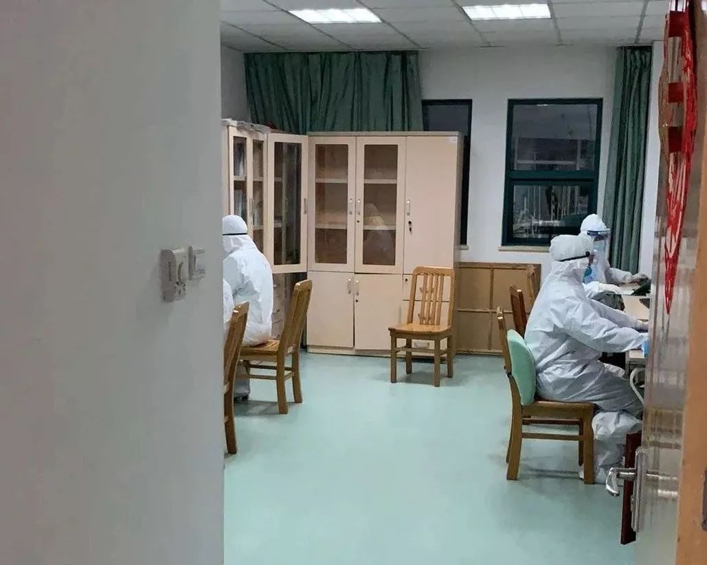

武汉被感染护士康复后返岗，隔离前曾给家人留“遗书”
原文链接 备份链接 “我在家族群里说，科室工作群里每天都有很多接诊信息，护士长已经连续工作48小时，还有护士生病了。选择当医生、当护士肯定是有风险，但我会做好防护。我返回岗位继续工作不是为了当英雄，但是不能做逃兵。” 全文2771字，阅读 …
***** *****
*****
*****现在如果能多一点N95口罩、给我们医院捐赠一些无创呼吸机，就更加好了。*****

身穿防护服的蔡毅。受访者供图
文 | 新京报记者 周小琪
编辑｜陈晓舒 校对 | 杨许丽
►本文约2456字，阅读全文约需5分钟
2020年2月2日凌晨，一则武汉一线医生自述的文章被广泛传播。发文者是武汉市中心医院（后湖院区）疼痛科的主任蔡毅，他讲述了一线护士被感染的经历，呼吁大家做好自我隔离，不要辜负医者眼泪。
他们所在的医院是距离华南海鲜市场最近的三甲医院，也是最早收治新型冠状病毒患者的医院之一。
在1月22日，医院被征用为第二批定点医院后，蔡毅和被感染的护士便主动报名，要求支援前线。
护士的感染让蔡毅难过。但战斗还在继续，“我们怕了、退了，武汉怎么办？”
“不仅要给患者治疗，还要防范身边可能被感染的战友”
*********** ***********
***********
剥洋葱：你在朋友圈写道，科室有护士感染了，经过大概是怎样的？
蔡毅：感染的护士和我都是1月23日第一批报名上前线的，也是同一天进病房。我们每天都很辛苦，八到十个小时工作，护士跟患者的接触比我们要更多。前天我突然接到她的电话，电话那边她在哭，说自己被感染了。我赶过去看了她刚拍的CT，上面有一块熟悉的肺部白块，我一下子不知道怎样才能安慰她。
剥洋葱：她现在的情况怎么样？
蔡毅：她现在自己在家里隔离，吃一些抗病毒的药，但是效果不太好，我在考虑把她收治入院。她的父母都去查了CT，父亲的肺部也显示有感染，所以可能也会把她爸爸收进来。
剥洋葱：得知她感染的消息之后，你们同事的反应如何？
蔡毅：有的同事知道了，就开始绕开她走。其实按规定，我也应该绕开的，但我做不到。她说她家里还有父母，害怕感染，想自己租房子隔离，我就加了层口罩，陪她去我们集中住的如家酒店退房，然后背着她向组织报告了，请他们安排给她的住所消毒。
按原则，接触了她，应该是要进行14天隔离的，但没有办法，毕竟我们手下还有32名患者。这段时间我一直在给同事们打气，鼓励他们，我们不仅要给患者治疗，还要时刻防范身边可能被感染的战友。
防护装备数量足够、质量欠缺
**********************
剥洋葱：你现在每天的工作是怎样的？
蔡毅：我是疼痛科主任，要管我们科室负责的这个病区，负责病人的诊疗全程，收治病人、开药等等，每天早晚都要去查房，上班时间加一起大概是十个小时。
剥洋葱：你们病区整体的情况怎么样？
蔡毅：我们病区是发热二区，总共是32名患者，大多数年纪都在40岁以上，轻症、重症、危重都有。
从硬件方面来看，这个病区以前是肿瘤科的病房，有单人间也有双人间，临时用来收治传染病患者之后，进行了一些改建，但是肯定没办法一下子就达到严格的隔离病房标准。
从人员来看，我们还是比较充足的，我们疼痛科的医护人员都过来了，医生有12个，护士30个，所以还能实现正常的排班，按各自的体力条件来，不会让谁超负荷工作。

蔡毅和他的团队身着防护服在工作。受访者供图
剥洋葱：物资也都能保障吧？
蔡毅：防护装备的数量还是能满足的，但符合质量要求的比较欠缺。平时有好的就用好的，没有好的，我们就把两件没那么好的凑在一起，尽量增强保护。
我们也向社会发起了物资捐赠的公告，大家都非常积极，有位市民在疫情暴发之前准备好了20个N95口罩，知道我要上一线，他送了我10个，跟我说“我们平时不怎么出门，你们医护人员更用得上”。
现在如果能多一点N95口罩、给我们医院捐赠一些无创呼吸机，就更加好了。
“为了不麻烦我们，患者不忍去按呼叫铃”
**********************
剥洋葱：在这段时间的工作中，碰到了哪些问题？
蔡毅：1月27日晚上是我第一次值班，我们病区也刚刚开放，进病房没几个小时，病人就已经住满了，当时真的心理上和身体上都没有做好准备。因为一切都是陌生的，陌生的患者、陌生的疾病、陌生的环境。
逐渐适应以后，我发现最关键的问题还是疾病本身。这个病毒比较难以掌控，潜伏期会传染，容易让人掉以轻心，而患者每天的病情变化也很快，可能今天还是轻症，明天就会加重，尤其是对那些有基础疾病的、年纪比较大的老人来说，风险很高。
再有就是穿着防护服工作，有很多不便，防护镜常常会起雾，人站在几米之外我们就看不清了，交流只能靠扯着嗓子喊，也给我们和患者沟通带来了一些困难。不过协和医院的杨东教授教了我一招，加上患者、家属的微信，把他们拉进不同的小群、分组管理，这样我们就能随时沟通了。
剥洋葱：患者对你们的态度如何？
蔡毅：这32名患者给予了我们最大的支持，谅解，我很感谢他们。甚至为了不麻烦我们，忍受着疾病带来的不适和恐惧。很多症状，都是我们问出来的，没去查房的时候，即使喘息，他们都忍着不说，不去按呼叫铃。因为他们怕我们累，怕传染我们。
剥洋葱：有没有让你印象比较深刻的患者？
蔡毅：今天上午，我对一名危重的男患者进行了抢救，他今年60多岁。我记得接管病区那天，他是自己一个人开着车来看病的，进病房隔离治疗之后就一直把车停在医院附近。他本身有合并心肺功能不全，来的时候就已经是呼吸衰竭了，在病房住了快一周，上午病情危重，尽管经过抢救，还是没挺过来。
他去世之后，殡仪馆的车就过来把他的遗体直接拉去火化了。他的儿子还在美国，老伴和弟弟赶来也没能见到最后一面，哭得不成样子。后来我帮他把车开回家，进行消毒。这个病人真的让我觉得很遗憾。
“只想对得起身上这件‘白皮’”
**********************
剥洋葱：从什么时候开始，你意识到了这次疫情的严重性？
蔡毅：我们医院是离华南海鲜市场最近的医院，最早在去年12月底就收治了患者。但医院其他科室，尤其我所在的外科，对这个情况并不是很清楚，整个医院太大了，好几千名工作人员。
1月初，我看到有人说这个病毒类似非典，也有同事开始出现肺炎相关的症状，但冬天本身就是病毒性感冒流行的季节，大家都没太把它当回事。所以大多数人也是到1月20日，钟南山院士在电视里讲，这个病毒可以人传人，我们才发现，它的传染性可能很强。
剥洋葱：你是一名外科医生，在此之前有过救治传染病患者的经历吗？
蔡毅：没有，非典的时候，我还在医学院上学。但这一次，医院在1月23日下外科动员令的时候，我很主动就报了名。
剥洋葱：报名后是什么感想？
蔡毅：医生也会怕，但这个时候只有互相鼓励、迎难而上，我们怕了、退了，武汉怎么办？我跟我们科室的人说，医生一辈子不碰一次疫情，就像是当了兵，一辈子没有扛过枪那么郁闷。我们只想对得起身上的这件“白皮”。
*洋葱话题*
*▼*
*如果身边的战友倒下了，你会怎么做**？*
*后台回复关键词*****“洋葱君” ，加入读者群****
***推荐阅读***

肺炎时期的“生门”故事

武汉定点医院一床难求，患者居家用衣柜隔离


*********既然在看，就点一下吧****** *********
*********
原文链接 备份链接 “我在家族群里说，科室工作群里每天都有很多接诊信息，护士长已经连续工作48小时，还有护士生病了。选择当医生、当护士肯定是有风险，但我会做好防护。我返回岗位继续工作不是为了当英雄，但是不能做逃兵。” 全文2771字，阅读 …
原文链接 备份链接 文/杜圆圆 编辑/单一 根据预测，新冠肺炎或将在一周后，迎来新的爆发期。从去年12月初被发现，到目前为止，疫情已经持续了两个月的时间。 从始至终，医护人员一直是最前线的逆行者。武汉这座刚崛起的新一线城市，成了全中国最惨 …
原文链接 备份链接 ********** *****那天夜里，从晚上七点，至次日上午八点，她连续接诊200余位输液留观的病人，装备只有一次性外科口罩、帽子、白大褂和手套。**********接诊区患者爆满，病房里床位紧张，设备缺少、防护不 …
原文链接 备份链接 联系上倩倩是腊月二十九。当天上午10点，武汉因新型冠状病毒肺炎封了城。她很焦急，她母亲和父亲被隔离在不同的医院，母亲严重，父亲轻微。哥哥也确诊了，但医院不接收，自己在一个酒店房间隔离。她担心虚弱的妈妈在病房里缺少照料。 …
原文链接 备份链接 武汉急诊科护士被感染 除夕夜独自居家隔离未告诉亲人病情丨武汉肺炎亲历 2020-01-25 22:47 作者：晏国文 曹学平 来源：中国经营网 本报记者 晏国文 曹学平 北京报道 “护士不好当，急诊的护士更不好当，武汉 …